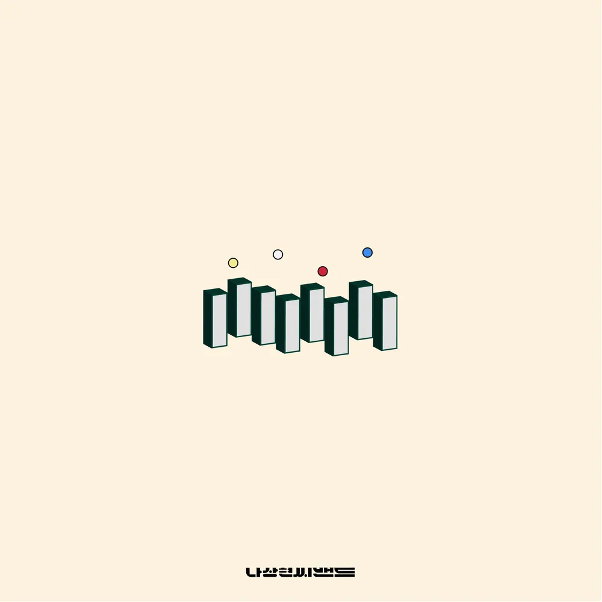

- ABOUT
- ALBUM
- SUMMER DAYS 2023
ALBUM
정규
'우리'

1. 손
2. 미소
3. 디-데이 (title)
4. 웅크리기
5. 사실
6. 그대
7. 둘이서
8. 우리 (feat. 손효진 Of 문없는집) (title)
10. 오늘도
'2021'
1. 인사
2. 도미노 (title)
3. 내내
4. 답
5. 색깔
6. 지난 날
7. 여름빛
8. 마음대로
9. 사라져
10. 무슨 일이 있어도 울지는 않네
11. 일몰
12. 열두시 (title)
13. 지평선
14. 고요
15. 품
16. 기도
17. 곁에
18. 가깝고도 먼
19. 우리의 시간